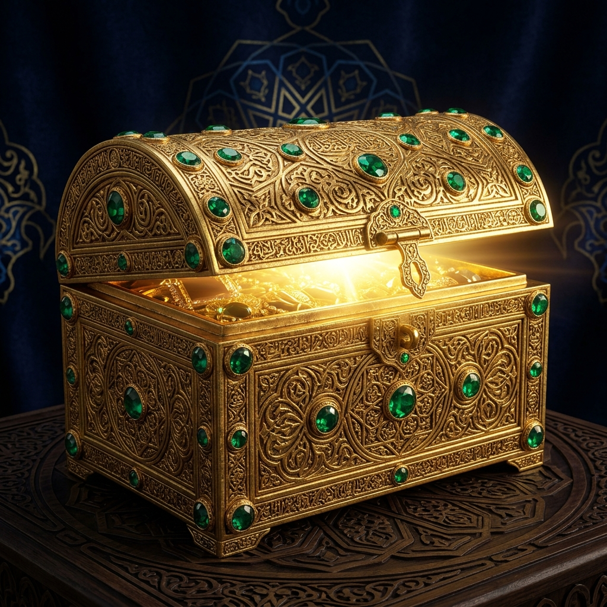
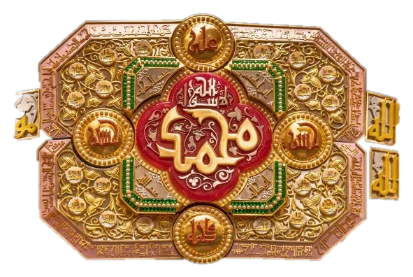

The Tazyeen Mubaraka — a symbol of divine artistry — connects to the discourse of Majlis 5 which explores the craft of architecture and construction. Click above to read the full reflection.
In this fifth waʿz mubarak, Syedna al-Dai al-Ajal TUS expounded upon the craft of architecture and construction — drawing parallels between the physical structures that shelter mankind and the spiritual edifices that protect the soul.
"The doing of Allah who perfected all things."
The Tazyeen Mubaraka, with its exquisite geometric precision and layered symbolism, stands as a living embodiment of this verse. Each line, each curve, each interlocking form within the tazyeen reflects the divine philosophy of itqaan — perfection in creation.
Architecture, Syedna TUS elaborated, is not merely about constructing physical shelters but about building communities, fostering connections, and creating spaces where faith and learning can flourish. The greatest architecture is the architecture of the soul — constructed through knowledge, refined through worship, and adorned through the remembrance of Imam Husain AS.
The Duat Mutlaqeen have always been master builders — not just of physical structures like the magnificent masajid and madrasas that dot the landscape of Dawat — but of human character and spiritual resolve.
Each majlis represents a unique realm of knowledge. Explore the cosmic arrangement of Ashara Mubaraka's ten discourses — hover and click to reveal each reflection.